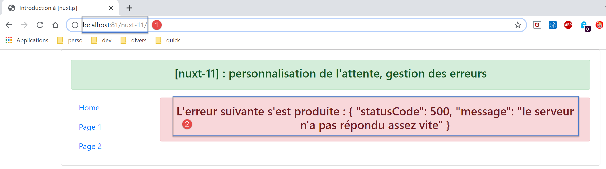
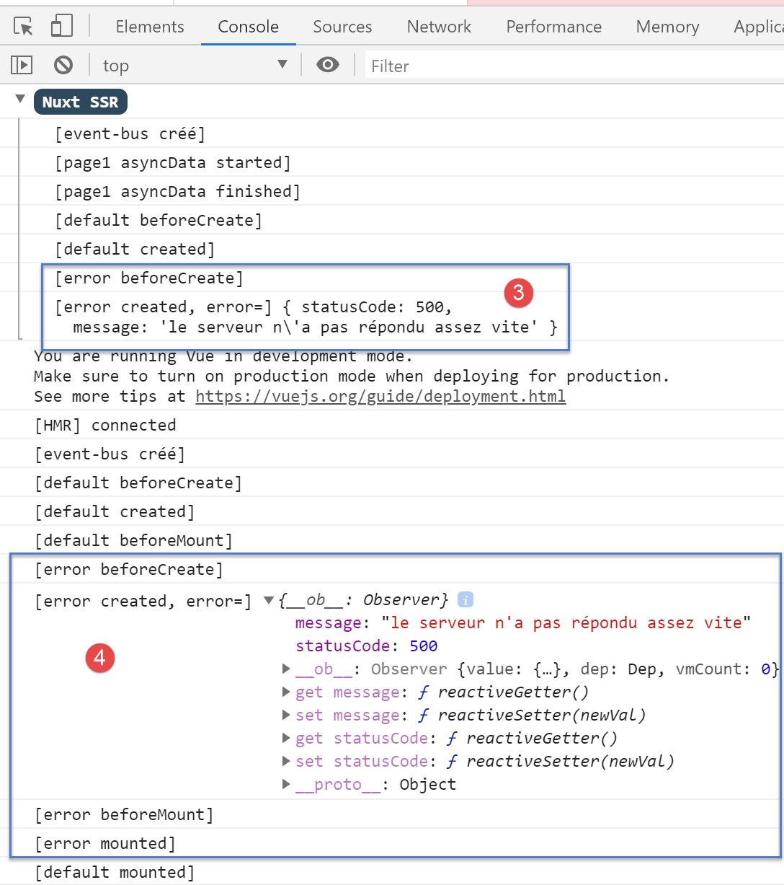
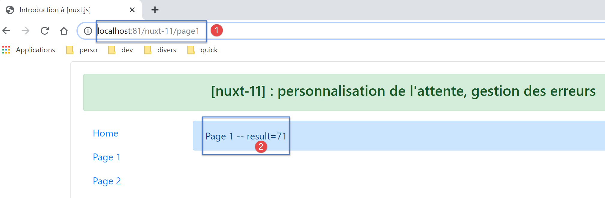
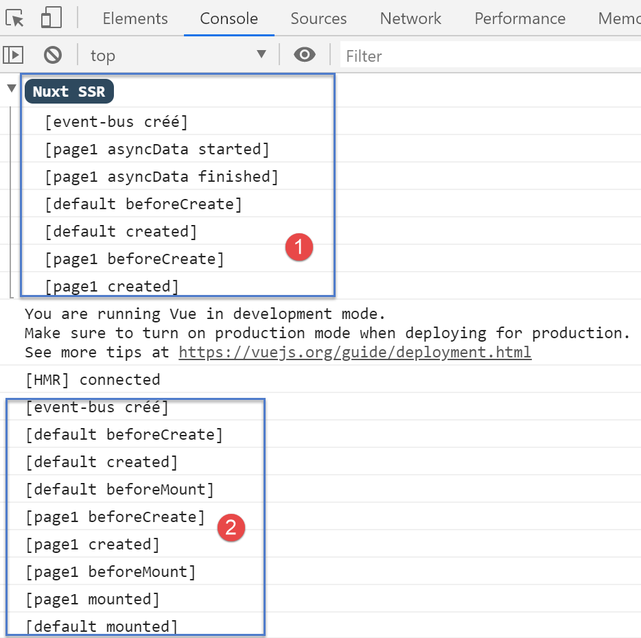
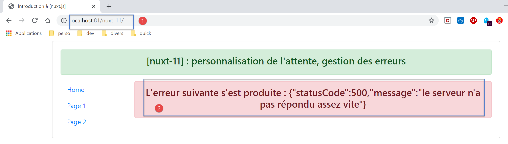
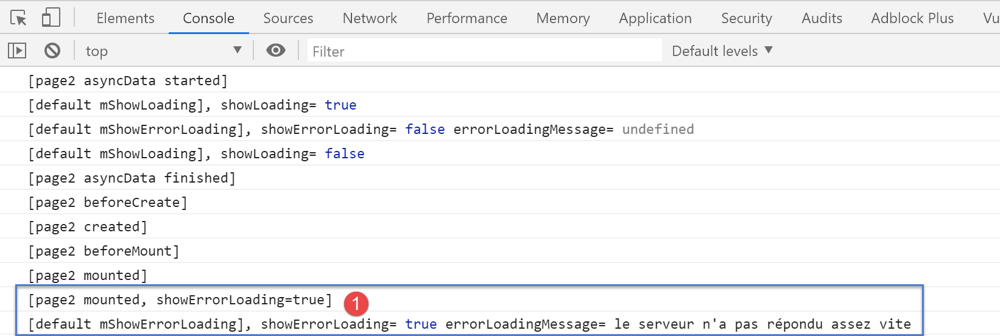

14. Example [nuxt-11]: Customizing the loading image
By default, the [nuxt] loading image is a progress bar. Example [nuxt-11] shows that you can replace it with your own loading image:

The [nuxt-11] example also shows how to handle loading errors.

The [nuxt-11] example is initially derived from the [nuxt-10] example:

In [1], we will add a plugin for the client that will be responsible for managing events between components.
14.1. The [event-bus] plugin
The [event-bus] plugin will be executed by both the client and the server, but we’ll see that it doesn’t work on the server side. Its code is as follows:
// on crée un bus d'événements entre les vues
import Vue from 'vue'
export default (context, inject) => {
// le bus d'événements
const eventBus = new Vue()
// injection d'une fonction [eventBus] dans le contexte
inject('eventBus', () => eventBus)
}
- line 5: the event bus is an instance of the [Vue] class. This class provides methods for handling events:
- [$emit]: to emit an event;
- [$on]: to listen for a specific event;
This event bus will handle only one event, [loading], which will be used by pages to start/stop the loading animation while waiting for an asynchronous function to complete;
- line 7: we create a function [$eventBus] (first argument) whose role will be to return the [eventBus] object we just created (second argument). This function is injected into the context so that it is available in the [context.app] and [this] objects of the pages;
14.2. The [default.vue] layout
The [default.vue] layout evolves as follows:
<template>
<div class="container">
<b-card>
<!-- un message -->
<b-alert show variant="success" align="center">
<h4>[nuxt-11] : personnalisation de l'attente, gestion des erreurs</h4>
</b-alert>
<!-- la vue courante du routage -->
<nuxt />
<!-- loading -->
<b-alert v-if="showLoading" show variant="light">
<strong>Requête au serveur de données en cours...</strong>
<div class="spinner-border ml-auto" role="status" aria-hidden="true"></div>
</b-alert>
<!-- erreur de chargement -->
<b-alert v-if="showErrorLoading" show variant="danger">
<strong>La requête au serveur de données a échoué : {{ errorLoadingMessage }}</strong>
</b-alert>
</b-card>
</div>
</template>
<script>
/* eslint-disable no-console */
export default {
name: 'App',
data() {
return {
showLoading: false,
showErrorLoading: false
}
},
// life cycle
beforeCreate() {
console.log('[default beforeCreate]')
},
created() {
console.log('[default created]')
// listen to the evt [loading]
this.$eventBus().$on('loading', this.mShowLoading)
// and the [errorLoadingMessage] event
this.$eventBus().$on('errorLoading', this.mShowErrorLoading)
},
beforeMount() {
console.log('[default beforeMount]')
},
mounted() {
console.log('[default mounted]')
},
methods: {
// load management
mShowLoading(value) {
console.log('[default mShowLoading], showLoading=', value)
this.showLoading = value
},
// loading error
mShowErrorLoading(value, errorLoadingMessage) {
console.log('[default mShowErrorLoading], showErrorLoading=', value, 'errorLoadingMessage=', errorLoadingMessage)
this.showErrorLoading = value
this.errorLoadingMessage = errorLoadingMessage
}
}
}
</script>
- lines 11–14: the loading animation. It is displayed only if the [showLoading] property is true (line 29);
- lines 16–18: the loading error message. It is displayed only if the [showErrorLoading] property (line 30) is true;
- lines 29-30: when the component is initially loaded, the loading animation is hidden, as is the error message;
- lines 37–43: when created, the page listens for the [loading] event (first argument) on the event bus created by the plugin. Upon receiving it, it executes the [mShowLoading] method in lines 52–55 (second argument);
- lines 52–55: The value received by the [mShowLoading] method will be a Boolean (true/false). It is used to show or hide the loading message;
- lines 41–42: When the page is created, it listens for the [errorLoading] event (first argument) on the event bus created by the plugin. Upon receiving it, it executes the [mShowErrorLoading] method in lines 57–61 (second argument);
- line 57: the [mShowErrorLoading] method takes two arguments:
- the first argument is a Boolean (true/false) to show or hide the error message;
- the second argument is only present if an error occurred. It represents the error message to be displayed;
- The logs on lines 53 and 58 will show us that the [showLoading] and [showErrorLoading] methods are not executed on the server side;
14.3. The [page1] page
The code for page [page1] changes as follows:
<!-- vue n° 1 -->
<template>
<Layout :left="true" :right="true">
<!-- navigation -->
<Navigation slot="left" />
<!-- message-->
<b-alert slot="right" show variant="primary"> Page 1 -- result={{ result }} </b-alert>
</Layout>
</template>
<script>
/* eslint-disable no-console */
/* eslint-disable nuxt/no-timing-in-fetch-data */
import Navigation from '@/components/navigation'
import Layout from '@/components/layout'
export default {
name: 'Page1',
// components used
components: {
Layout,
Navigation
},
// asynchronous data
asyncData(context) {
// log
console.log('[page1 asyncData started]')
// start waiting
context.app.$eventBus().$emit('loading', true)
// no error
context.app.$eventBus().$emit('errorLoading', false)
// we make a promise
return new Promise(function(resolve, reject) {
// we simulate an asynchronous function
setTimeout(function() {
// end waiting
context.app.$eventBus().$emit('loading', false)
// log
console.log('[page1 asyncData finished]')
// we make the result asynchronous - a random number here
resolve({ result: Math.floor(Math.random() * Math.floor(100)) })
}, 5000)
})
},
// life cycle
beforeCreate() {
console.log('[page1 beforeCreate]')
},
created() {
console.log('[page1 created]')
},
beforeMount() {
console.log('[page1 beforeMount]')
},
mounted() {
console.log('[page1 mounted]')
}
}
</script>
- The changes occur in the [asyncData] function on lines 26–47;
- lines 29–30: Before the asynchronous function begins, the [loading] event is emitted to the other pages of the application. Note that in [asyncData], we do not yet have access to the [this] object, which has not yet been created. We therefore use the context passed as an argument to the [asyncData] function (line 26);
- line 30: the event bus is used to indicate that loading is about to begin;
- line 38: We use the event bus to indicate that loading is complete;
Note: At runtime, when the [page1] page is requested from the server, the loading image is not displayed. In the logs, we see that on the server side, the [default.mShowLoading] method is not called. In any case, seeing the loading image makes no sense when the page is requested from the server. The server only sends the page to the client browser once the [asyncData] function has finished. The loading image is therefore unnecessary. This will be the case for all pages in the application requested directly from the server.
14.4. The [index] page
The code for the [index] page is as follows:
<!-- page principale -->
<template>
<Layout :left="true" :right="true">
<!-- navigation -->
<Navigation slot="left" />
<!-- message-->
<b-alert slot="right" show variant="warning">
Home
</b-alert>
</Layout>
</template>
<script>
/* eslint-disable no-undef */
/* eslint-disable no-console */
/* eslint-disable nuxt/no-env-in-hooks */
/* eslint-disable nuxt/no-timing-in-fetch-data */
import Navigation from '@/components/navigation'
import Layout from '@/components/layout'
export default {
name: 'Home',
// components used
components: {
Layout,
Navigation
},
// asynchronous data
asyncData(context) {
// log
console.log('[page1 asyncData started]')
// start waiting
context.app.$eventBus().$emit('loading', true)
// no error
context.app.$eventBus().$emit('errorLoading', false)
// we make a promise
return new Promise(function(resolve, reject) {
// we simulate an asynchronous function
setTimeout(function() {
// end waiting
context.app.$eventBus().$emit('loading', false)
// log
console.log('[page1 asyncData finished]')
// we return an error
reject(new Error("le serveur n'a pas répondu assez vite"))
}, 5000)
}).catch((e) => context.error({ statusCode: 500, message: e.message }))
},
// life cycle
beforeCreate() {
console.log('[home beforeCreate]')
},
created() {
console.log('[home created]')
},
beforeMount() {
console.log('[home beforeMount]')
},
mounted() {
console.log('[home mounted]')
// no error
this.$eventBus().$emit('errorLoading', false)
}
}
</script>
- lines 30–49: the [asyncData] function is identical to the one on the [page1] page, with one exception: on line 46, the asynchronous function is terminated on failure (using the [reject] method);
- line 46: the parameter of the [reject] function is an instance of the [Error] class. The parameter of the [Error] constructor is the error message;
- line 48: this error is caught by the [catch] method of the [Promise], which receives the error as a parameter. We then use the [context.error] function to report the error. The parameter of the [context.error] function is an object with two properties here:
- [statusCode]: an HTTP error code;
- [message]: an error message;
Whether [asyncData] is executed by the client or the server, in the event of a [context.error], [nuxt] displays the [layouts/error.vue] page:

Although it is a page, the [error.vue] page is looked for in the [layouts] folder (perhaps to prevent it from being included in the application’s routes?). Here, the [error.vue] page is as follows:
<!-- définition HTML de la vue -->
<template>
<!-- mise en page -->
<Layout :left="true" :right="true">
<!-- alerte dans la colonne de droite -->
<template slot="right">
<!-- message sur fond jaune -->
<b-alert show variant="danger" align="center">
<h4>L'erreur suivante s'est produite : {{ JSON.stringify(error) }}</h4>
</b-alert>
</template>
<!-- menu de navigation dans la colonne de gauche -->
<Navigation slot="left" />
</Layout>
</template>
<script>
/* eslint-disable no-undef */
/* eslint-disable no-console */
/* eslint-disable nuxt/no-env-in-hooks */
import Layout from '@/components/layout'
import Navigation from '@/components/navigation'
export default {
name: 'Error',
// components used
components: {
Layout,
Navigation
},
// property [props]
props: { error: { type: Object, default: () => 'waiting ...' } },
// life cycle
beforeCreate() {
// client and server
console.log('[error beforeCreate]')
},
created() {
// client and server
console.log('[error created, error=]', this.error)
},
beforeMount() {
// customer only
console.log('[error beforeMount]')
},
mounted() {
// customer only
console.log('[error mounted]')
}
}
</script>
When [nuxt] renders the [error.vue] page, it passes the error that occurred to it as a [props] property (line 33). If the error was caused by [context.error(object1)], the [props] property of the [error.vue] page will have the value [object1]. The [nuxt] documentation states that [object1] must have at least the [statusCode, message] attributes. Line 9 displays the JSON string of the received [object1] object.
14.5. The [page2] page
The [page2] page shows another way to handle the error:
- in [page1], the error is displayed in a separate page [error.vue];
- in [page2], the error will be displayed on the [page2] page that caused the error;
The code for [page2] is as follows:
<!-- vue n° 2 -->
<template>
<Layout :left="true" :right="true">
<!-- navigation -->
<Navigation slot="left" />
<!-- message -->
<b-alert slot="right" show variant="secondary">
Page 2
</b-alert>
</Layout>
</template>
<script>
/* eslint-disable no-console */
/* eslint-disable nuxt/no-timing-in-fetch-data */
import Navigation from '@/components/navigation'
import Layout from '@/components/layout'
export default {
name: 'Page2',
// components used
components: {
Layout,
Navigation
},
// asynchronous data
asyncData(context) {
// log
console.log('[page2 asyncData started]')
// start waiting
context.app.$eventBus().$emit('loading', true)
// no error
context.app.$eventBus().$emit('errorLoading', false)
// we make a promise
return new Promise(function(resolve, reject) {
// we simulate an asynchronous function
setTimeout(function() {
// end waiting
context.app.$eventBus().$emit('loading', false)
// arbitrarily generate an error
const errorLoadingMessage = "le serveur n'a pas répondu assez vite"
// successful completion
resolve({ showErrorLoading: true, errorLoadingMessage })
// log
console.log('[page2 asyncData finished]')
}, 5000)
})
},
// life cycle
beforeCreate() {
console.log('[page2 beforeCreate]')
},
created() {
console.log('[page2 created]')
},
beforeMount() {
console.log('[page2 beforeMount]')
},
mounted() {
console.log('[page2 mounted]')
// customer
if (this.showErrorLoading) {
console.log('[page2 mounted, showErrorLoading=true]')
this.$eventBus().$emit('errorLoading', true, this.errorLoadingMessage)
}
}
}
</script>
Once again, we insert an [asyncData] function into the page code, and like [index], [page2] will generate an error that we will handle differently this time.
- line 44: both the server and the client resolve the promise successfully by returning the result [{ showErrorLoading: true, errorLoadingMessage }]. We know that this will include the properties [showErrorLoading, errorLoadingMessage] in the page’s [data] properties and that the client will receive these properties;
- lines 60–67: we know that the [mounted] function is executed only by the client;
- line 63: the client checks whether the [showErrorLoading] property has been set (by the server or the client, as appropriate). If so, it emits the [‘errorLoading’] event (line 65) so that the [default] page displays the error message [this.errorLoadingMessage]. Ultimately, the server sends a page without an error message displayed. The error message is displayed at the last moment by the client when the page is ‘mounted’;
14.6. Execution
14.6.1. [nuxt.config]
The [nuxt.config.js] runtime file is as follows:
export default {
mode: 'universal',
/*
** Headers of the page
*/
head: {
title: 'Introduction à [nuxt.js]',
meta: [
{ charset: 'utf-8' },
{ name: 'viewport', content: 'width=device-width, initial-scale=1' },
{
hid: 'description',
name: 'description',
content: 'ssr routing loading asyncdata middleware plugins store'
}
],
link: [{ rel: 'icon', type: 'image/x-icon', href: '/favicon.ico' }]
},
/*
** Customize the progress-bar color
*/
loading: false,
/*
** Global CSS
*/
css: [],
/*
** Plugins to load before mounting the App
*/
plugins: [{ src: '@/plugins/event-bus' }],
/*
** Nuxt.js dev-modules
*/
buildModules: [
// Doc: https://github.com/nuxt-community/eslint-module
'@nuxtjs/eslint-module'
],
/*
** Nuxt.js modules
*/
modules: [
// Doc: https://bootstrap-vue.js.org
'bootstrap-vue/nuxt',
// Doc: https://axios.nuxtjs.org/usage
'@nuxtjs/axios'
],
/*
** Axios module configuration
** See https://axios.nuxtjs.org/options
*/
axios: {},
/*
** Build configuration
*/
build: {
/*
** You can extend webpack config here
*/
extend(config, ctx) {}
},
// source code directory
srcDir: 'nuxt-11',
// router
router: {
// application URL root
base: '/nuxt-11/'
},
// server
server: {
// service port, default 3000
port: 81,
// network addresses listened to, default localhost: 127.0.0.1
// 0.0.0.0 = all the machine's network addresses
host: 'localhost'
}
}
- line 22: set the [loading] property to [false] so that [nuxt] does not use its default loading image;
- line 31: the plugin that defines the event bus;
14.6.2. The [index] page served by the server
Let’s request the [index] page from the server (we type the URL [http://localhost:81/nuxt-11/] manually). The page displayed by the client browser is as follows:

The logs are as follows:

- in [3], we see that the server sends the [error.vue] page;
- In [4], we see that the client also displays the [error] page with the same error as the server;
- we can see that the [mShowLoading] method of the [default] page was not called on the server side even though the [index] page had triggered a wait. This method is called upon receiving an event, and clearly event handling is not implemented on the server side;
Let’s examine the source code of the page received by the client browser:
<!doctype html>
<html data-n-head-ssr>
<head>
<title>Introduction à [nuxt.js]</title>
<meta data-n-head="ssr" charset="utf-8">
<meta data-n-head="ssr" name="viewport" content="width=device-width, initial-scale=1">
<meta data-n-head="ssr" data-hid="description" name="description" content="ssr routing loading asyncdata middleware plugins store">
<link data-n-head="ssr" rel="icon" type="image/x-icon" href="/favicon.ico">
<base href="/nuxt-11/">
<link rel="preload" href="/nuxt-11/_nuxt/runtime.js" as="script">
<link rel="preload" href="/nuxt-11/_nuxt/commons.app.js" as="script">
<link rel="preload" href="/nuxt-11/_nuxt/vendors.app.js" as="script">
<link rel="preload" href="/nuxt-11/_nuxt/app.js" as="script">
...
</head>
<body>
<div data-server-rendered="true" id="__nuxt">
<div id="__layout">
<div class="container">
<div class="card">
<div class="card-body">
<div role="alert" aria-live="polite" aria-atomic="true" align="center" class="alert alert-success">
<h4>[nuxt-11] : personnalisation de l'attente, gestion des erreurs</h4>
</div>
<div>
<div class="row">
<div class="col-2">
<ul class="nav flex-column">
<li class="nav-item">
<a href="/nuxt-11/" target="_self" class="nav-link active nuxt-link-active">
Home
</a>
</li>
<li class="nav-item">
<a href="/nuxt-11/page1" target="_self" class="nav-link">
Page 1
</a>
</li>
<li class="nav-item">
<a href="/nuxt-11/page2" target="_self" class="nav-link">
Page 2
</a>
</li>
</ul>
</div> <div class="col-10"><div role="alert" aria-live="polite" aria-atomic="true" align="center" class="alert alert-danger">
<h4>L'erreur suivante s'est produite : {"statusCode":500,"message":"le serveur n'a pas répondu assez vite"}</h4>
</div>
</div>
</div>
</div>
</div>
</div>
</div>
</div>
</div>
<script>window.__NUXT__ = (function (a, b, c, d) {
d.statusCode = 500; d.message = "le serveur n'a pas répondu assez vite";
return {
layout: "default", data: [d], error: d, serverRendered: true,
logs: [
{ date: new Date(1575047424168), args: ["[event-bus créé]"], type: a, level: b, tag: c },
{ date: new Date(1575047424175), args: ["[page1 asyncData started]"], type: a, level: b, tag: c },
{ date: new Date(1575047429455), args: ["[page1 asyncData finished]"], type: a, level: b, tag: c },
{ date: new Date(1575047429515), args: ["[default beforeCreate]"], type: a, level: b, tag: c },
{ date: new Date(1575047429675), args: ["[default created]"], type: a, level: b, tag: c },
{ date: new Date(1575047430157), args: ["[error beforeCreate]"], type: a, level: b, tag: c },
{ date: new Date(1575047430246), args: ["[error created, error=]", "{ statusCode: 500,\n message: 'le serveur n\\'a pas répondu assez vite' }"], type: a, level: b, tag: c }]
}
}("log", 2, "", {}));</script>
<script src="/nuxt-11/_nuxt/runtime.js" defer></script>
<script src="/nuxt-11/_nuxt/commons.app.js" defer></script>
<script src="/nuxt-11/_nuxt/vendors.app.js" defer></script>
<script src="/nuxt-11/_nuxt/app.js" defer></script>
</body>
</html>
- line 57: we see that the server sent an object [d] representing the error that occurred on the server side;
- line 59: we see a property [error] whose value is the object [d]. We can assume that it is the presence of the [error] property in the page sent by the server that causes the client-side scripts to display the [error.vue] page with the [error] error;
14.6.3. The [page1] page executed by the server
We manually type the URL [http://localhost:81/nuxt-11/page1]. After 5 seconds, the browser displays the following page:

The logs displayed are as follows:

- in [1], the server logs. Note that the [mShowLoading] method of the [default] page was not called;
- in [2], the client logs;
14.6.4. The [page2] page executed by the server
We manually type the URL [http://localhost:81/nuxt-11/page2]. After 5 seconds, the browser displays the following page:

Let’s examine the logs displayed in the browser:

- in [1], the server logs. Recall that the server included the [showErrorLoading, errorLoadingMessage] properties in the page sent to the client browser. We know that these properties will then be included in the [data] of the page displayed by the client
- in [3], when the [page2] page is mounted, it finds the [showErrorLoading] property set to true. It then sends an event to the [default] page, so that it displays the error message sent by the server [4];
14.6.5. The [index] page executed by the client
We now use the navigation links to display the three pages. All pages displayed by the client are identical to those displayed by the server. The only difference is that the 5-second loading image is displayed each time.
We start with the [index] page. The loading image is then displayed:

then after 5 seconds, the following page appears:

The final page is therefore identical to the one obtained on the server side.

Recall the [asyncData] function on the [index] page:
asyncData(context) {
// log
console.log('[page1 asyncData started]')
// start waiting
context.app.$eventBus().$emit('loading', true)
// no error
context.app.$eventBus().$emit('errorLoading', false)
// we make a promise
return new Promise(function(resolve, reject) {
// we simulate an asynchronous function
setTimeout(function() {
// end waiting
context.app.$eventBus().$emit('loading', false)
// log
console.log('[page1 asyncData finished]')
// we return an error
reject(new Error("le serveur n'a pas répondu assez vite"))
}, 5000)
}).catch((e) => context.error({ statusCode: 500, message: e.message }))
}
The client logs are as follows:
- in [1], the [asyncData] function starts;
- in [2], the loading image is displayed;
- in [2-3], we see that the [default] page has received the events [loading, true] [2] and [errorLoading, false] sent by the [asyncData] function of the [index] page (lines 5 and 7);
- in [4], the wait ends. The [default] page has received the [loading, false] event sent by the [index] page (line 13);
- In [5], the [asyncData] function has finished its work;
- because the [asyncData] function generated an error with [context.error] (line 19), the [error] page is displayed [6];
14.6.6. The [page1] page executed by the client
After waiting 5 seconds, the client displays the following page:

Let's review the code for the [asyncData] function from [page1]:
asyncData(context) {
// log
console.log('[page1 asyncData started]')
// start waiting
context.app.$eventBus().$emit('loading', true)
// no error
context.app.$eventBus().$emit('errorLoading', false)
// we make a promise
return new Promise(function(resolve, reject) {
// we simulate an asynchronous function
setTimeout(function() {
// end waiting
context.app.$eventBus().$emit('loading', false)
// log
console.log('[page1 asyncData finished]')
// we make the result asynchronous - a random number here
resolve({ result: Math.floor(Math.random() * Math.floor(100)) })
}, 5000)
})
},
The logs are as follows:

14.6.7. The [page2] page executed by the client
After waiting 5 seconds, the client displays the following page:

Let’s review the code for the [asyncData] and [mounted] functions in [page2]:
asyncData(context) {
// log
console.log('[page2 asyncData started]')
// start waiting
context.app.$eventBus().$emit('loading', true)
// no error
context.app.$eventBus().$emit('errorLoading', false)
// we make a promise
return new Promise(function(resolve, reject) {
// we simulate an asynchronous function
setTimeout(function() {
// end waiting
context.app.$eventBus().$emit('loading', false)
// arbitrarily generate an error
const errorLoadingMessage = "le serveur n'a pas répondu assez vite"
// successful completion
resolve({ showErrorLoading: true, errorLoadingMessage })
// log
console.log('[page2 asyncData finished]')
}, 5000)
})
}
mounted() {
console.log('[page2 mounted]')
// customer
if (this.showErrorLoading) {
console.log('[page2 mounted, showErrorLoading=true]')
this.$eventBus().$emit('errorLoading', true, this.errorLoadingMessage)
}
}
The logs are as follows:

- In [1], the [default] page received the [showErrorLoading, true] event sent by [page2] (line 29), which instructs it to display the error message;